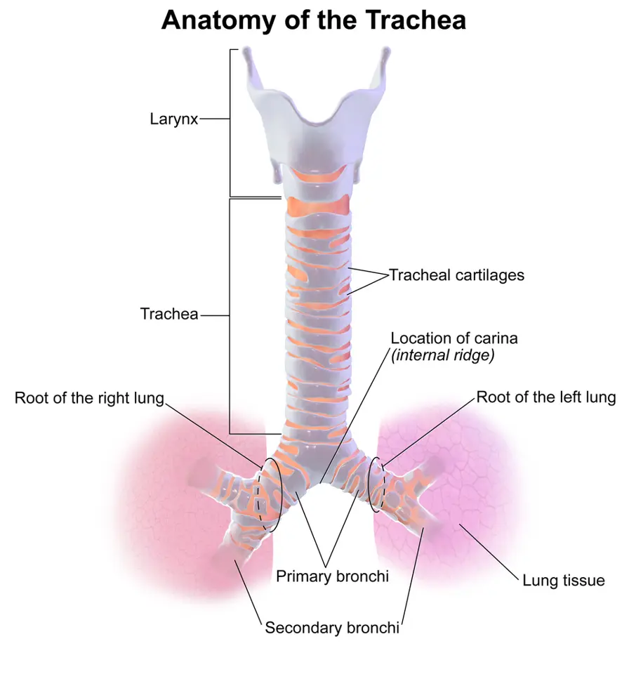
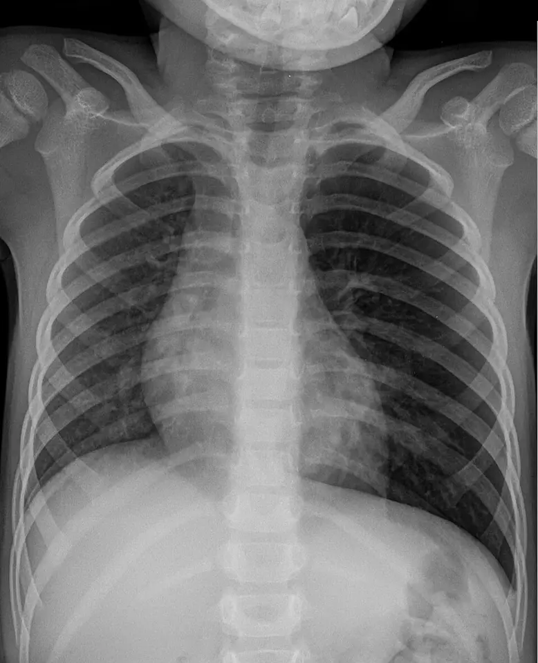
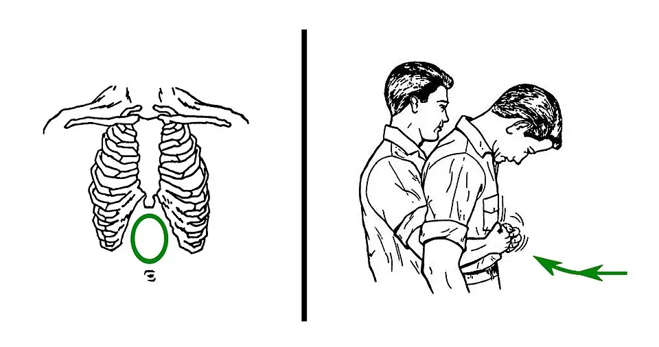

DX.10 — Obstruction aiguë des voies aériennes par corps étranger 🚩 E1
L'obstruction aiguë des voies aériennes par un corps étranger empêche l'air de passer et provoque l'arrêt cardiaque en quelques minutes lorsqu'elle est complèteS1. Le témoin la reconnaît chez une personne qui ne peut soudain plus parler ni tousser, surtout pendant un repasS1. Il encourage la toux, puis il donne des claques dorsales et des compressions abdominales, et il commence la réanimation dès la perte de conscienceS1S4. Le médecin cherche ensuite le corps étranger passé dans les bronches, que la radiographie peut manquerS5S6.
Phase A du LOT · diagnostics voisins : DX.3 impaction alimentaire œsophagienne, DX.1 dysphagie après AVC, DX.9 myasthénie.
1. Définition
Les recommandations 2025 de premiers secours du Conseil européen de réanimation (ERC) définissent l'étouffement comme une obstruction des voies aériennes par un corps étrangerS1. Le corps étranger peut se loger dans les voies aériennes supérieures, dans la trachée ou dans les bronches et bronchiolesS1. L'obstruction est partielle lorsque l'air passe encore autour de l'objet et permet de tousser ou de parlerS1. Elle est complète lorsque aucun air ne passe : la personne ne parle plus, sa toux faiblit ou disparaît, et elle ne peut plus respirerS1.
2. Épidémiologie (Suisse, puis Europe)
En Suisse, 135 personnes meurent en moyenne chaque année d'un accident de suffocation (Erstickungsunfall), selon le Bureau de prévention des accidents (bpa)S14. L'étouffement survient surtout chez le jeune enfant et chez la personne âgée, selon les recommandations européennes de 2025S1. En Suisse romande, le CHUV rappelle que la majorité des accidents par étouffement concernent des enfants de moins de 5 ansS13. Les séries pédiatriques suisses montrent un âge médian proche de 2 ans, tandis que les séries d'adultes concernent surtout des patients âgés, souvent sans facteur prédisposantS5S6S11. Le pronostic dépend presque entièrement de la rapidité du geste du témoinS1. Les objets en cause diffèrent selon l'âge, ce qui oriente la préventionS8.
L'enfant : le premier terrain
À l'Hôpital universitaire pédiatrique de Zurich, 370 bronchoscopies rigides réalisées entre 1989 et 2003 ont trouvé un corps étranger dans 59,7 % des casS5. L'âge médian de ces enfants était de 1,8 anS5. Aux HUG à Genève, 70 enfants suspects ont été explorés entre 2009 et 2014 ; un corps étranger était présent chez 23 d'entre eux, soit 33 %S6.
Le registre européen Susy Safe a recensé 16 878 accidents par corps étranger chez des enfants de 0 à 14 ansS8. Avant un an, près d'un quart des corps étrangers se trouvaient dans l'arbre bronchiqueS8. Les aliments représentaient 26 % des objets, surtout les os, les noix et les graines ; les objets non alimentaires représentaient 74 %S8.
Les objets en cause chez l'enfant
Dans le registre Susy Safe, les perles, balles et billes constituaient 29 % des objets non alimentaires, les pièces 15 % et les jouets 4 %S8. Avant un an, les corps étrangers œsophagiens restaient fréquents, alors que l'oreille et le nez dominaient chez les enfants plus âgésS8.
À Genève, les 70 enfants explorés comptaient 45 garçons et 25 filles, avec un âge médian de 21,5 moisS6. Les recommandations pédiatriques européennes rappellent que la plupart des épisodes surviennent pendant un repas et devant un témoinS2. L'enlèvement précoce de l'objet par le témoin s'associe à une meilleure survie avec bonne issue neurologiqueS2.
L'adulte et la personne âgée
Les adultes s'étouffent surtout avec de la viande, des noix, des raisins et d'autres alimentsS1. Dans une série multicentrique de 138 adultes bronchoscopés, l'âge moyen atteignait 66,3 ans et 65,9 % étaient des hommesS11. Seuls 43,5 % de ces patients rapportaient un épisode d'étouffement, ce qui explique les diagnostics tardifsS11.
L'intoxication alcoolique, les sédatifs, les maladies neurologiques et les crises d'épilepsie prédisposent l'adulte à l'inhalationS11. L'accident vasculaire cérébral était le facteur prédisposant le plus fréquent, chez 13,8 % des patientsS11. Les dents et prothèses dentaires dominaient les inhalations aiguës, avec 53,3 % des casS11.
Dans cette série, l'inhalation survenait d'abord à domicile, chez 25,4 % des patients, puis dans un cabinet dentaire, chez 21,0 %S11. Les auteurs attribuaient environ 40 % des inhalations de l'adulte à un événement iatrogèneS11. Aucun facteur prédisposant n'était retrouvé chez 70,3 % des adultes, ce qui interdit d'écarter le diagnostic chez un sujet sainS11.
Ce qui sauve : le geste du témoin
Dans la plus grande cohorte citée par l'ERC, un témoin a tenté le premier geste dans 643 cas, soit 90,7 %S1. Ce geste a levé l'obstruction chez 492 patients, soit 76,5 %, et 480 d'entre eux ont survécu, soit 97,6 %S1. Une seconde étude de 407 patients transportés aux urgences ne rapportait une issue neurologique favorable que chez 24 % d'entre euxS1.
Les décès par bol alimentaire surviennent si vite qu'ils imitent un infarctus, d'où le nom de « café coronary »S9. Les victimes autopsiées présentent souvent des troubles neurologiques et prennent des médicaments qui altèrent la déglutitionS9.
3. Physiopathologie
Base à connaître : un tuyau unique, puis deux bronches
L'air passe par un seul conduit, du larynx à la carène, puis il se divise entre deux bronches principalesS10. Un objet bloqué au-dessus de la carène peut donc supprimer toute ventilation, alors qu'un objet bronchique n'obstrue qu'un poumonS1S10. La base anatomo-fonctionnelle explique aussi pourquoi le corps étranger descend plus souvent à droiteS10.
Base à connaître : du larynx aux bronches
À l'échelle d'une population, la bronche principale droite est plus verticale, plus large et plus courte que la gaucheS10. Elle prolonge ainsi l'axe de la trachée, et plusieurs séries rapportent plus de 60 à 70 % de corps étrangers à droite chez l'adulteS10. Dans une série de 35 adultes, 74,3 % des corps étrangers bronchiques siégeaient à droiteS10.
Voies aériennes, du larynx aux bronches. Ce schéma publié en couleur par Blausen Medical montre de face le larynx, la trachée, la carène et les bronches principales.

Lisez d'abord seul ce cliché (voies aériennes, du larynx aux bronches) : cherchez vous-même le signe.
La copie annotée (voies aériennes, du larynx aux bronches) porte des repères numérotés, que la lecture guidée décrit ensuite.
- Le larynx forme le passage le plus étroit de l’adulte ; un bolus alimentaire s’y bloque et supprime toute ventilation.
- La trachée, soutenue par des anneaux cartilagineux, conduit l’air vers la carène sans se collaber.
- La carène sépare les deux bronches ; un corps étranger qui la franchit n’obstrue plus qu’un seul poumon.
- La bronche principale droite, plus verticale, plus courte et plus large, prolonge l’axe de la trachée.
- Le schéma présente le patient de face : la bronche droite apparaît à gauche de l’image.
- La morphologie individuelle des bronches ne prédit pas le côté de l’aspiration chez un patient donné.
Ce que l'image décide. Un corps étranger bloqué au larynx impose les manœuvres de désobstruction immédiates, alors qu’un corps étranger bronchique impose une bronchoscopie.

Cette même étude montre cependant que la morphologie individuelle ne prédit pas le côté atteint ; le médecin examine donc toujours les deux poumonsS10. Dans la série coréenne, 68,8 % des corps étrangers siégeaient dans l'arbre bronchique droit et 30,4 % dans le gaucheS11.
Trois niveaux, trois tableaux
Le niveau de l'obstruction détermine à la fois le tableau clinique et le geste qui sauve. Le tableau de corrélation relie chaque niveau à son signe, à son examen et à son traitement.
Perturbation, exploration, thérapeutique
| Perturbation | Exploration qui la montre | Thérapeutique qui la corrige |
|---|---|---|
| Obstruction complète du larynx ou de la trachée | Clinique seule : aphonie, toux absente, détresse | Claques dorsales, compressions abdominales ou thoraciques, réanimationS1S2 |
| Obstruction persistante chez un patient inconscient | Laryngoscopie directe | Extraction à la pince, puis cricothyroïdotomie si elle échoueS3 |
| Clapet bronchique avec piégeage d'air | Radiographie : distension unilatérale, déplacement du médiastin | BronchoscopieS5S6 |
| Bronche obstruée avec poumon d'aval non aéré | Radiographie : atélectasie ; scanner | Bronchoscopie, puis traitement de l'infectionS6S11 |
De l'hypoxie à l'arrêt
L'obstruction complète provoque une hypoxie rapide, puis une perte de connaissance et un arrêt cardiaque en quelques minutesS1. Un réflexe vagal, déclenché par le plexus nerveux de l'orifice laryngé, peut aussi provoquer une mort très rapide, comme le montrent les constatations d'autopsieS9. La toux génère au contraire des pressions élevées et prolongées dans les voies aériennes, ce qui peut expulser l'objetS1.
Ce que montre l'autopsie
L'autopsie montre des morceaux d'aliments mal mâchés bloqués à l'orifice laryngé, au-dessus de lui ou dans la trachée voisineS9. Dans les trois cas italiens publiés, les fragments s'étendaient de l'orifice laryngé jusqu'aux grosses bronches, au-delà de la bifurcationS9. Une congestion et une cyanose du visage, ainsi que des pétéchies sous-épicardiques, complétaient les constatationsS9.
Ces décès touchaient des personnes atteintes de troubles neurologiques qui prenaient des médicaments agissant sur le système nerveux centralS9. La démence, la maladie de Parkinson et les lésions neurologiques altèrent la déglutition et favorisent ce type d'accidentS9.
Le clapet bronchique
Un objet bronchique peut laisser entrer l'air à l'inspiration, mais il le bloque à l'expiration, comme une valve. Le poumon d'aval se distend alors et repousse le médiastin vers le côté sain, ce que montre la radiographieS5S6.
4. Démarche diagnostique
Le diagnostic grave passe avant tout : une obstruction complète se traite dans la minute, sans aucun examenS1. Le médecin distingue ensuite l'obstruction partielle, qui laisse tousser, puis le corps étranger bronchique passé inaperçuS1S5. Les diagnostics discriminants séparent enfin l'étouffement de l'impaction œsophagienne et des autres causes de détresse brutale.
🚩 E1 — Obstruction complète : agir sans délai
La personne ne peut soudain plus parler ni tousser, souvent pendant un repas, et elle lutte pour respirer ou n'y parvient plusS1. Chez l'enfant, le signe d'alerte est l'impossibilité de parler ou de pleurer fort pendant un repas ou un jeu sans surveillanceS2. Aucun examen ne doit retarder les gestes, car l'arrêt cardiaque survient en quelques minutesS1.
Obstruction partielle : laisser tousser
Une personne éveillée qui tousse efficacement doit être encouragée à tousser, sans recevoir de claque ni de compressionS1. Les claques et les compressions sont réservées à l'obstruction sévère, lorsque la toux devient inefficace ou impossibleS1. Le témoin surveille sans cesse l'efficacité de la toux, car une obstruction partielle peut devenir complète.
Le corps étranger qui a franchi la carène
Après la phase d'étouffement, la toux peut se calmer, alors que l'objet reste dans une broncheS5. À Zurich, une diminution unilatérale du murmure vésiculaire et une distension unilatérale à la radiographie étaient les signes les plus sensibles, de 53 à 79 %S5. La triade toux brutale, sifflement et murmure unilatéral diminué avait une spécificité de 96 à 98 %S5. Aucun signe ni aucune combinaison ne permet cependant d'exclure l'inhalation avec certitude, comme le détaille la série zurichoiseS5.
Zurich : la valeur des signes selon la durée des symptômes
L'équipe zurichoise a séparé les enfants dont les symptômes duraient moins de 2 semaines de ceux dont ils duraient davantageS5. Dans les deux groupes, le murmure unilatéral diminué et la distension radiologique unilatérale restaient les signes les plus utilesS5. Une histoire d'étouffement aigu dans le premier groupe, ou une toux permanente dans le second, n'avait qu'une spécificité de 8 à 16 %S5.
Les auteurs concluaient qu'une bronchoscopie exploratrice doit être réalisée dès que l'inhalation est suspectéeS5. Cette conclusion explique pourquoi une radiographie rassurante ne clôt jamais la discussion chez un enfant symptomatiqueS5.
Diagnostics discriminants, des graves aux fréquents
| Diagnostic | Élément qui tranche | Piège | Conduite si positif |
|---|---|---|---|
| 🚩 Obstruction complète des voies aériennes | Aphonie, toux absente, détresse au repas | Confusion avec un malaise cardiaque | Claques dorsales et compressions, puis réanimationS1S9 |
| 🚩 Arrêt cardiaque d'autre cause | Absence de respiration normale sans contexte d'étouffement | Bol alimentaire méconnu à l'autopsie | Réanimation de base et défibrillationS4S9 |
| Impaction œsophagienne (DX.3) | Le patient parle et respire, mais il ne peut pas avaler sa salive | Les deux surviennent pendant un repas | Endoscopie digestive (voir DX.3) |
| Corps étranger bronchique | Murmure diminué d'un côté, distension radiologique | Radiographie normale | BronchoscopieS5S6 |
| Anaphylaxie avec œdème laryngé | Urticaire, hypotension, exposition à un allergène | Stridor attribué à un objet | Adrénaline intramusculaireAIPS |
5. Anamnèse ciblée et drapeaux rouges
L'anamnèse ne se fait qu'après la levée de l'obstruction, ou auprès d'un témoin pendant les gestes. Elle caractérise l'épisode d'étouffement, puis elle recherche les facteurs favorisants et le tableau retardé qui révèle un objet oubliéS5S11. Les drapeaux rouges décident de l'action immédiate.
L'épisode d'étouffement, décrit point par point
Le début est brutal, pendant un repas, un jeu ou un soin dentaire, souvent devant un témoinS1S11. Le type associe toux explosive, impossibilité de parler, cyanose ou apnée ; l'apnée avait une spécificité de 100 % pour une sensibilité de 22 % à GenèveS6. L'évolution se fait vers la levée spontanée, vers l'arrêt ou vers une accalmie trompeuse si l'objet descend dans une broncheS1S5.
L'épisode est typique lorsqu'un étouffement soudain est suivi de toux et de sifflement chez un petit enfantS5S6. Il est atypique lorsque seule une toux chronique ou des pneumonies répétées l'évoquent, ce qui retarde le diagnostic chez l'adulteS11.
Ce qui favorise l'inhalation
Chez le petit enfant, les noix, les amandes, les graines, les tomates cerises et les raisins entiers exposent à l'étouffement selon le Bureau de prévention des accidentsS12. Chez l'adulte, le médecin recherche l'alcool, les sédatifs, une maladie neurologique ou une crise d'épilepsieS11. Il interroge aussi sur les médicaments du système nerveux central, comme les antipsychotiques et les antiépileptiques, qui altèrent la déglutitionS9.
Le corps étranger oublié
À Zurich, les enfants dont les symptômes duraient depuis plus de 2 semaines présentaient surtout une toux permanente, dont la spécificité restait faibleS5. Chez l'adulte, les formes chroniques se révélaient par des pneumonies récidivantes ou une toux chronique inexpliquéeS11. Le médecin pose donc la question de l'étouffement devant toute pneumonie récidivante au même endroitS11.
Drapeaux rouges et action immédiate
| Drapeau rouge | Signification | Action immédiate |
|---|---|---|
| Impossibilité de parler ou de tousser | Obstruction complète | Claques dorsales puis compressionsS1 |
| Toux qui devient faible ou inefficace | Obstruction qui s'aggrave | Passer aux claques dorsalesS1 |
| Perte de conscience | Hypoxie grave, arrêt imminent | Alarme au 144 et réanimationS1S4 |
| Cyanose ou apnée chez l'enfant | Obstruction sévère | Gestes pédiatriques immédiatsS2S6 |
| Murmure diminué d'un côté après l'épisode | Corps étranger bronchique | Radiographie et bronchoscopieS5 |
6. Examen physique ciblé, région par région
L'examen suit le danger : d'abord la conscience et la respiration, puis la bouche, le cou, le thorax et enfin l'abdomen après les compressionsS1S5. Pendant une obstruction complète, l'examen se limite à constater l'échec de la toux et de la paroleS1.
Conscience et respiration
Le médecin vérifie si la personne répond, puis il cherche une respiration absente ou anormaleS4. En l'absence de réponse avec respiration absente ou anormale, il commence aussitôt la réanimationS4S1. La saturation peut être surestimée par l'oxymètre chez les personnes à peau foncée, ce qui ne doit pas rassurer à tortS3.
Bouche : regarder, ne jamais fouiller à l'aveugle
Le médecin examine la bouche ouverte, car un objet visible peut se retirer sous contrôle de la vue. Un balayage digital à l'aveugle peut aggraver l'obstruction ou blesser les tissus ; seul un objet clairement visible se retire au doigtS1S2. Il recherche aussi une dent manquante ou une prothèse cassée, cause fréquente d'inhalation chez l'adulteS11.
Cou : stridor et tirage
Le stridor inspiratoire signe un obstacle haut, laryngé ou trachéal, alors que le sifflement oriente vers un obstacle bronchiqueS1. Le tirage sus-sternal et la respiration paradoxale traduisent un effort contre une obstruction. Chez l'enfant de Bâle, la respiration paradoxale avec murmure presque absent signait une obstruction centrale presque complèteS7.
Thorax : comparer les deux côtés
Le médecin doit comparer l'ampliation et le murmure vésiculaire des deux hémithorax, car l'objet bronchique n'obstrue qu'un côtéS5. Une diminution unilatérale du murmure faisait partie des signes les plus sensibles et spécifiques dans la série zurichoiseS5. Un sifflement localisé ou des crépitants unilatéraux orientent aussi vers l'objet bronchique ou sa complication infectieuseS5S11.
Après les compressions abdominales
Toute personne traitée par compressions abdominales ou thoraciques doit être examinée par un professionnel de santé, car ces gestes peuvent provoquer des complicationsS1. Le médecin palpe l'abdomen et le thorax à la recherche d'une douleur, d'une défense ou d'une fracture costale. Il réévalue ensuite la respiration, car un fragment peut rester dans les voies aériennes.
7. Approche syndromique
L'obstruction se décompose en quatre syndromes, numérotés dans l'ordre de gravité : asphyxie aiguë, obstruction laryngotrachéale partielle, syndrome bronchique unilatéral et syndrome infectieux retardéS1S5S11. Le tableau de synthèse indique, pour chacun, les signes fonctionnels et les signes physiques.
| Syndrome | Signes fonctionnels | Signes physiques |
|---|---|---|
| 7.1 Asphyxie aiguë | Impossibilité de parler, de tousser, de respirer | Cyanose, perte de conscience, arrêt |
| 7.2 Obstruction laryngotrachéale partielle | Toux, gêne respiratoire, voix altérée | Stridor, tirage |
| 7.3 Syndrome bronchique unilatéral | Toux, dyspnée, sifflement | Murmure diminué d'un côté, sibilants localisés |
| 7.4 Syndrome infectieux retardé | Toux chronique, fièvre, crachats sanglants | Crépitants localisés, foyer récidivant |
7.1 Asphyxie aiguë
L'asphyxie aiguë correspond à l'obstruction complète, qui provoque hypoxie, perte de connaissance et arrêt cardiaque en quelques minutesS1. Son signe est l'échec simultané de la parole, de la toux et de la respirationS1. Son mécanisme impose des gestes immédiats, sans examen complémentaireS1.
7.2 Obstruction laryngotrachéale partielle
L'air peut encore passer autour de l'objet ; la personne tousse et parle, avec un stridor si l'obstacle siège au larynx ou dans la trachéeS1. La toux peut expulser l'objet, ce qui justifie de l'encourager tant qu'elle reste efficaceS1. Si la toux s'épuise, l'obstruction devient sévère et le geste changeS1.
7.3 Syndrome bronchique unilatéral
Une fois la carène franchie, l'objet réduit la ventilation d'un seul poumon ; le murmure y diminue et la radiographie peut montrer une distension unilatéraleS5. À Genève, l'étouffement soudain, la cyanose, l'apnée, le murmure diminué, l'atélectasie, le déplacement du médiastin et le piégeage d'air distinguaient les enfants porteurs d'un objetS6.
7.4 Syndrome infectieux retardé
Dans la série coréenne, les symptômes les plus fréquents étaient la toux, chez 60,9 % des patients, puis la dyspnée, chez 44,2 %S11. La fièvre, les crachats sanglants et le sifflement complétaient le tableau chez une minorité d'adultesS11. Une pneumonie qui récidive dans le même territoire impose donc une bronchoscopieS11.
Dans le groupe chronique de cette série, 93,8 % des bronchoscopies étaient programmées, et seuls deux patients se souvenaient d'une inhalationS11. Les pneumonies récidivantes et la toux chronique inexpliquée motivaient alors l'examen dans 56,3 % des casS11. Dans le groupe aigu, après les dents, les os de poulet ou de poisson représentaient 33,3 % des objets et les comprimés 8,3 %S11.
8. Diagnostic positif et critères
Le diagnostic de l'obstruction complète est clinique et se pose sans aucun examen : impossibilité soudaine de parler ou de tousser, surtout pendant un repasS1. Le diagnostic d'un corps étranger bronchique repose au contraire sur la bronchoscopie, seule capable de voir et de retirer l'objetS5S6.
Ce qui suffit et ce qui ne suffit pas
| Élément | Suffit-il ? | Raison |
|---|---|---|
| Impossibilité soudaine de parler ou de tousser au repas | Oui, pour agir | Il définit l'obstruction sévèreS1 |
| Triade étouffement, sifflement, murmure diminué | Presque | Sa spécificité atteint 96 à 98 %S5 |
| Anamnèse d'étouffement seule | Non | Sa spécificité tombait à 8 à 16 %S5 |
| Radiographie normale | Non, pour exclure | Aucune combinaison n'exclut l'inhalationS5 |
| Aucun signe ni étouffement soudain | Rend l'objet improbable | Aucun objet chez 15 des 70 enfants concernésS6 |
À Genève, l'absence de ces sept signes et de tout étouffement soudain prédisait une bronchoscopie négative chez 15 enfants sur 70S6. Cette règle aide à éviter les bronchoscopies rigides inutiles, mais elle ne s'applique pas à l'enfant symptomatiqueS6.
9. Examens complémentaires
L'examen de référence est la bronchoscopie, qui confirme et traite ; l'obstruction complète, elle, ne demande aucun examenS5S6S1. La radiographie du thorax constitue l'examen de première intention après la levée de l'obstructionS5. La bronchoscopie souple ou rigide et le scanner thoracique forment la deuxième intentionS6S11.
9.b — Radiographie du thorax, première intention
La radiographie est indiquée après tout épisode d'étouffement avec symptôme persistant, ou devant un signe auscultatoire unilatéralS5. Le médecin demande une radiographie de face ; elle cherche une distension unilatérale, une atélectasie ou un objet radio-opaqueS5S6. Dans la série coréenne, 65,0 % des inhalations aiguës portaient un objet radio-opaque visibleS11.
Arachide inhalée chez un enfant de trois ans. Cette radiographie thoracique de face, debout, montre le thorax d’un enfant de trois ans après l’inhalation d’une arachide.

Lisez d'abord seul ce cliché (arachide inhalée chez un enfant de trois ans) : cherchez vous-même le signe.
La copie annotée (arachide inhalée chez un enfant de trois ans) porte des repères numérotés, que la lecture guidée décrit ensuite.
- Le poumon gauche paraît plus noir et plus volumineux, car l’arachide crée un clapet qui laisse entrer l’air sans le laisser sortir.
- Le médiastin et le cœur sont refoulés vers la droite du patient, c’est-à-dire vers la gauche de l’image.
- Le poumon droit garde une transparence normale et sert de comparaison.
- L’arachide est radiotransparente : la radiographie montre son effet sur l’aération, jamais l’objet lui-même.
- Une radiographie normale n’exclut pas l’inhalation ; elle ne dispense pas de la bronchoscopie si l’anamnèse est évocatrice.
Ce que l'image décide. Une distension unilatérale avec déplacement du médiastin chez un enfant impose une bronchoscopie pour retirer le corps étranger.

| Résultat | Signification | Conduite |
|---|---|---|
| Distension unilatérale, médiastin refoulé | Clapet bronchique | BronchoscopieS5S6 |
| Atélectasie | Bronche complètement obstruée | BronchoscopieS6 |
| Objet radio-opaque | Dent, prothèse, os | Bronchoscopie ; localiser l'objetS11 |
| Radiographie normale avec anamnèse évocatrice | N'exclut rien | Bronchoscopie selon la cliniqueS5 |
9.a et 9.d — Bronchoscopie, examen de référence
À Genève, la bronchoscopie souple posait le diagnostic d'emblée dans 22 cas sur 23, soit 96 %S6. Elle permettait l'extraction dans 7 cas sur 23, soit 30 %, et la bronchoscopie rigide retirait les 16 autres objets, soit 70 %S6. Cette stratégie évitait presque toutes les bronchoscopies rigides négatives, sans complication grave ni décèsS6. La bronchoscopie rigide n'avait été choisie d'emblée que chez 2 enfants, soit 3 %, et l'une de ces deux explorations était négativeS6.
Chez l'adulte, la bronchoscopie souple retirait l'objet avec succès chez 91,3 % des patients de la série coréenneS11. Elle provoquait un saignement mineur chez 3,6 % d'entre euxS11. Au moment du geste, 80,4 % des patients étaient éveillés, ce qui montre que l'inhalation passe souvent sans trouble de conscienceS11.
Dans la série coréenne, la bronchoscopie se faisait en urgence chez 42,8 % des adultes, et 10,1 % avaient besoin d'une ventilation pendant le gesteS11. Le scanner avait précédé la bronchoscopie chez 92,0 % des patientsS11.
Le piège survient lors d'une obstruction presque complète : la ventilation au masque peut devenir impossible pendant l'anesthésieS7. À Bâle, repousser l'objet dans la bronche souche droite a permis de ventiler un enfant, puis de l'extraire sous oxygénation extracorporelle, comme le détaille le cas bâloisS7.
Bâle : quand la ventilation devient impossible
Une fillette de 2 ans et 5 mois a inhalé un corps étranger à domicile et a été réanimée avec succès par les ambulanciersS7. À l'arrivée, elle présentait une dyspnée sévère, une hypercapnie, une cyanose et une respiration paradoxale, avec un murmure presque absentS7. Ce tableau correspondait à une obstruction centrale presque complète des voies aériennesS7.
Après l'induction de l'anesthésie, la ventilation au masque est devenue presque impossible, et une bradycardie est survenueS7. L'équipe a repoussé l'objet dans la bronche souche droite, ce qui a rétabli la ventilation au masqueS7. Toute nouvelle manipulation provoquait cependant des désaturations sévères, ce qui empêchait l'extractionS7.
L'enfant a donc été transférée par avion sanitaire vers un centre pédiatrique d'oxygénation extracorporelle, où l'extraction a réussiS7. Elle a guéri sans séquelle neurologique, ce qui montre l'intérêt de planifier le transfert avant la bronchoscopie difficileS7.
9.c — Scanner thoracique, alternative chez l'adulte
Le scanner est utile chez l'adulte stable dont le tableau est chronique ou ambigu. Dans la série coréenne, il montrait l'objet dans 60,9 % des casS11. Il montrait sinon une lésion endobronchique, du mucus ou une atélectasie qui justifiait la bronchoscopie, dans 22,8 % des casS11.
Chez l'enfant, le médecin évite l'irradiation inutile et préfère la bronchoscopie souple lorsque la suspicion clinique est forteS6.
10. Arbre décisionnel
L'arbre part de l'étouffement observé et place l'obstruction complète en premier.
- Une personne qui tousse efficacement doit être encouragée à tousser et surveilléeS1.
- Une toux inefficace chez l'adulte ou l'enfant impose jusqu'à 5 claques dorsales, puis jusqu'à 5 compressions abdominalesS1S2.
- Chez le nourrisson, les 5 claques dorsales alternent avec 5 compressions thoraciques à deux poucesS2.
- Une perte de conscience impose l'alarme au 144 et la réanimation immédiateS1S4.
- À l'hôpital, un patient inconscient encore obstrué relève de la laryngoscopie et de la pince, puis de la cricothyroïdotomie si elles échouentS3.
- Après la levée, un symptôme persistant impose un examen médical, une radiographie et parfois une bronchoscopieS1S5.
11. Prise en charge selon les recommandations suisses
11.A But chiffré
Le but est de lever l'obstruction avant l'arrêt cardiaque, car les gestes du témoin réussissent dans plus de trois quarts des casS1. Après la levée, le but devient l'absence de corps étranger résiduel et de complication des gestes, vérifiée par l'examen médicalS1.
11.B Moyens
La conduite d'urgence suit le Swiss Resuscitation Council (SRC) pour la réanimation et l'ERC pour la désobstructionS4S1. Le témoin donne les claques dorsales, puis les compressions abdominales, et il adapte les gestes au nourrisson et à l'enfantS1S2. L'équipe hospitalière ajoute la laryngoscopie, la cricothyroïdotomie et l'adrénaline en cas d'arrêtS3.
Urgence — conduite chronologique de l'étouffement
- Seconde 0 : le témoin demande à la personne si elle s'étouffe et l'encourage à tousserS1.
- Dès que la toux faiblit : il donne jusqu'à 5 claques dorsales, puis jusqu'à 5 compressions abdominalesS1.
- Ensuite : il alterne 5 claques et 5 compressions jusqu'à la désobstruction ou la perte de conscienceS1.
- Au plus tôt : un second témoin appelle le 144 et va chercher le défibrillateurS4.
- Perte de conscience : il commence 30 compressions thoraciques suivies de 2 insufflations, au rythme de 100 à 120 par minuteS4S1.
- Arrivée de l'équipe : laryngoscopie et extraction à la pince sous contrôle visuel chez le patient inconscientS3.
- Échec de l'oxygénation : l'équipe réalise une cricothyroïdotomie au bistouri et à la bougieS3.
- Après la désobstruction : examen médical systématique, car les gestes peuvent blesserS1.
Les compressions thoraciques génèrent des pressions plus élevées que les compressions abdominales, ce qui peut déloger l'objet tout en assurant un débit cardiaqueS1. Le témoin ne doit jamais fouiller la bouche à l'aveugleS1.
Claques dorsales chez l'adulte et l'enfant
Le sauveteur se place derrière la personne, la penche en avant et frappe entre les omoplates avec le talon de la mainS1. Les claques dorsales constituent le premier geste, car les compressions données d'emblée réussissent moins et blessent davantageS1. Dans une cohorte de 2024, seuls 16 % des sauveteurs alternaient les techniques, car un seul geste suffit souventS1.
Compressions abdominales chez l'adulte et l'enfant
Le sauveteur se place derrière la personne, entoure le haut de son abdomen et la penche en avantS1. Il place le poing entre l'ombilic et le bas du sternum, le saisit de l'autre main et tire brusquement vers l'intérieur et vers le hautS1S2. Les compressions abdominales pourraient être plus efficaces chez l'enfant que chez l'adulteS2.
Compressions abdominales chez l’adulte conscient. Cette illustration publiée par le service de santé de l’armée américaine montre le point d’appui puis la position du sauveteur.

Lisez d'abord seul ce cliché (compressions abdominales chez l’adulte conscient) : cherchez vous-même le signe.
La copie annotée (compressions abdominales chez l’adulte conscient) porte des repères numérotés, que la lecture guidée décrit ensuite.
- Le cercle situe le poing entre l’ombilic et le bord inférieur du sternum, sous l’appendice xiphoïde.
- La flèche indique la traction brusque du poing vers l’intérieur et vers le haut.
- Le sauveteur se place derrière la victime, qui se penche en avant.
- Le poing posé sur l’appendice xiphoïde ou sur les côtes peut provoquer des fractures et des lésions viscérales.
- Une victime qui tousse efficacement ne reçoit aucune compression ; on l’encourage seulement à tousser.
Ce que l'image décide. Les compressions abdominales suivent cinq claques dorsales inefficaces, puis elles alternent avec elles jusqu’à la désobstruction ou la perte de conscience.

Le nourrisson : claques et compressions thoraciques
Le sauveteur doit placer le nourrisson à plat ventre sur son avant-bras, appuyé sur sa cuisse, la tête plus basse que le thoraxS2. Il donne jusqu'à cinq claques fermes entre les omoplates, puis il retourne l'enfant sur le dosS2. Il comprime alors le sternum jusqu'à cinq fois avec la technique des deux pouces encerclants, plus sèchement que pour un massageS2.
L'ERC préfère désormais les deux pouces aux deux doigts, car ils produisent des compressions plus profondes et une pression plus élevéeS2. Dès que l'enfant devient inconscient, le sauveteur commence la réanimation par 5 insufflationsS2S4. Le Bureau de prévention des accidents conseille aux parents de tenir l'enfant tête vers l'avant et de frapper fort entre les omoplatesS12.
L'équipe hospitalière
Chez un patient inconscient dont l'obstruction persiste, l'équipe retire l'objet sous laryngoscopie directe à la pince, geste qui exige un entraînementS3. Si l'oxygénation reste impossible, l'ERC recommande une cricothyroïdotomie chirurgicale au bistouri et à la bougieS3. Dans une étude australienne, l'approche chirurgicale réussissait dans 88,2 % des cas, contre 54,6 % pour l'approche à l'aiguilleS3.
L'ERC rappelle que la cricothyroïdotomie reste rare : une étude australienne en comptait 1,1 pour 1000 réanimations tentéesS3. Son taux de succès en arrêt cardiaque atteignait 58,9 % dans cette même étudeS3. Après l'intubation, seule une courbe de capnographie soutenue pendant au moins sept cycles confirme la position trachéale du tubeS3.
Pour un enfant en détresse vitale, la bronchoscopie se fait dans un centre capable d'une oxygénation extracorporelle, comme l'a montré le cas bâlois de 2026S7.
Dispositifs d'aspiration et réanimation de base
L'ERC ne recommande ni ne déconseille les dispositifs d'aspiration vendus contre l'étouffement, faute de preuves solides et indépendantesS1S2. Leur emploi ne doit jamais retarder les claques, les compressions ni la réanimation de baseS1S4.
La réanimation de base selon l'algorithme suisse
L'algorithme du SRC commence par un contrôle rapide de la sécurité, puis il fait appeler à l'aide, alarmer le 144 et chercher le défibrillateurS4. Le sauveteur libère les voies aériennes, puis il commence la réanimation si la respiration est absente ou anormaleS4. Il alterne 30 compressions thoraciques et 2 insufflations dès que l'algorithme l'imposeS4.
Les compressions se font au milieu de la cage thoracique, à une profondeur de 5 à 6 cm et à une fréquence de 100 à 120 par minuteS4. Le sauveteur laisse le thorax se relâcher complètement, limite les interruptions et place la victime sur une surface dure si possibleS4. Dès l'arrivée du défibrillateur, il l'allume et suit ses instructions jusqu'à l'arrivée des secours professionnelsS4.
Chez l'enfant, le sauveteur commence par 5 insufflations, puis il applique un rapport de 15 compressions pour 2 insufflationsS4. Il comprime alors le thorax d'un tiers de son diamètreS4. S'il est seul et sans téléphone portable, il réanime une minute avant de donner l'alarmeS4.
Les dispositifs d'aspiration : ce que disent les données
Ces dispositifs appliquent un masque sur le visage et créent une dépression par un piston muni d'une valve antiretourS1. Six séries de cas rapportaient une désobstruction dans 595 cas sur 610, soit 97,5 %S1. L'ERC juge pourtant ces données biaisées, car les fabricants fournissaient souvent les chiffres et le dénominateur manquaitS1.
Une lésion dentaire est survenue chez 1 patient sur 25 dans une analyse rétrospective, et des ecchymoses péribuccales ont été décritesS1. Le déballage et l'assemblage du dispositif retardent les gestes établis, qui s'appliquent tout de suite et sans coûtS1. Pour ces raisons, l'ERC ne peut recommander ni déconseiller leur emploiS1S2.
Pharmacologie
Aucun médicament ne lève l'obstruction ; l'adrénaline sert seulement à la réanimation de l'arrêt cardiaque qui suitS3AIPS. Le tableau des médicaments résume son emploi.
Adrénaline — Adrenalin Sintetica® 1 mg/ml (n° 56551)AIPS
| Indication | Choc anaphylactique, crise d'asthme, réanimation cardiopulmonaire de l'arrêt cardiaqueAIPS |
|---|---|
| Dose AIPS adulte | 0,5 à 1 mg par voie intraveineuse, après dilution au dixième, répétée toutes les 3 à 5 minutesAIPS |
| Dose AIPS enfant | 0,01 mg/kg par voie intraveineuse, en dose initialeAIPS |
| Recommandation | L'ERC recommande 1 mg chez l'adulte en rythme non choquable, répété toutes les 3 à 5 minutes, dose comprise dans l'AIPSS3AIPS |
| Contre-indications | Voie systémique : hypersensibilité, hypertension, hyperthyroïdie, glaucome à angle fermé, maladies coronariennes et cardiomyopathies, phéochromocytome, tachycardie paroxystique et arythmie absolue à fréquence très élevée, entre autres ; en urgence vitale et dans les réactions anaphylactiques graves, l'AIPS admet l'usage au cas par cas malgré ces contre-indicationsAIPS |
| Grossesse | Seulement si clairement indispensable ; risque de tachycardie et d'anoxie fœtalesAIPS |
| Allaitement | L'adrénaline passe dans le lait ; l'AIPS conseille d'interrompre l'allaitementAIPS |
Divergence écrite : l'AIPS autorise 0,5 à 1 mg en réanimation, alors que l'ERC recommande une dose fixe de 1 mgAIPSS3. Le cours enseigne la dose de l'ERC, qui reste comprise dans la fourchette autorisée par l'AIPS.
L'ERC recommande l'adrénaline le plus tôt possible chez l'adulte en rythme non choquable, puis après le troisième choc en rythme choquableS3.
Situations spéciales
L'ERC ne dispose d'aucune étude sur la personne qui s'étouffe seule ; il ne formule donc aucune conduite spécifique pour elleS1. Chez la personne âgée ou dysphagique, le médecin cherche la cause de l'étouffement, car les maladies neurologiques et les médicaments altèrent la déglutitionS9. Il oriente alors vers le bilan de la Phase A et vers les diagnostics DX.1 ou DX.9.
Volet social et assurances
Comme la dysphagie neurologique et certains médicaments favorisent les décès par bol alimentaire, un étouffement chez un patient dysphagique justifie de revoir ses repas et ses traitementsS9. Les parents reçoivent les conseils du Bureau de prévention des accidents adaptés à l'âge de l'enfantS12.
11.C Surveillance
Après la désobstruction, le médecin surveille la respiration, l'auscultation et la douleur abdominale, car les compressions peuvent blesserS1. Une toux, un sifflement ou un murmure unilatéral persistant impose la recherche d'un objet résiduelS5. Après une réanimation, la surveillance suit la filière de l'arrêt cardiaqueS3.
11.D Pronostic, guérison et sortie
Le pronostic est excellent si l'obstruction est levée avant l'arrêt : 97,6 % des patients survivaient après un geste efficace du témoinS1. Il devient mauvais après l'arrêt, puisque seul un quart des patients transportés gardait une issue neurologique favorableS1.
Le patient quitte la surveillance lorsque les critères suivants sont réunis.
- Il respire normalement, sans stridor ni sifflementS1.
- Son auscultation est symétrique, ou l'objet bronchique a été retiréS5S6.
- L'examen a écarté une lésion due aux compressionsS1.
- La cause de l'étouffement est identifiée, et le bilan de déglutition est prévu si nécessaireS9.
12. Prévention
La prévention primaire protège le petit enfant : le Bureau de prévention des accidents déconseille entre 6 et 12 mois les noix, les amandes, les graines, les tomates cerises et le raisinS12. Le CHUV recommande de ne laisser aucun petit objet à portée d'un enfant de moins de 3 ans, comme les pièces, billes, cacahuètes, olives ou pilesS13. Il recommande aussi des jouets adaptés à l'âge et conformes aux normesS13.
Les conseils aux parents traduisent ces règles en gestes simples à la maisonS12S13.
Conseils de prévention aux parents
Le Bureau de prévention des accidents recommande de ne donner au bébé de 6 à 12 mois que des aliments mousS12. Il apprend aussi aux parents à reconnaître l'étouffement : toux soudaine, réflexe nauséeux, détresse respiratoire et coloration bleutée du visageS12. Il recommande de retirer les petits objets à proximité du bébé, y compris pendant le bainS12.
Le CHUV conseille aux parents de se mettre parfois à quatre pattes pour voir ce qui traîne sous les meubles, car l'enfant le trouveraS13. Il rappelle qu'un œil de peluche arraché peut être avalé et provoquer un étouffementS13. Il demande enfin de ne laisser ni petits objets ni aliments sur une table basse accessible aux enfants de moins de 3 ansS13.
La prévention secondaire repose sur la formation des témoins, car le geste du témoin réussit dans plus de trois quarts des casS1S2. La prévention tertiaire vise les personnes dysphagiques : textures adaptées, repas surveillés et révision des médicaments qui altèrent la déglutitionS9.
13. Points clés
- Une personne qui ne peut soudain plus parler ni tousser en mangeant s'étouffe et doit être secourue immédiatementS1.
- Une toux efficace s'encourage, alors qu'une toux inefficace impose les claques dorsales, puis les compressions abdominalesS1.
- Le nourrisson reçoit des claques dorsales et des compressions thoraciques, jamais de compressions abdominalesS2.
- Toute perte de conscience impose l'alarme et la réanimation, car les compressions thoraciques peuvent aussi déloger l'objetS1S4.
- Une radiographie normale n'exclut pas un corps étranger bronchique, car seule la bronchoscopie permet de trancherS5S6.
14. Pièges et questions fréquentes à l'examen fédéral suisse
| Question | Réponse | Raison |
|---|---|---|
| Une personne qui tousse fort après une fausse route doit-elle recevoir des compressions abdominales ? | Non | On encourage la toux tant qu'elle reste efficace (point 4)S1 |
| Quel geste donner en premier lorsque la toux devient inefficace ? | Jusqu'à 5 claques dorsales | Les compressions d'emblée réussissent moins et blessent davantage (point 11)S1 |
| Quelle technique de compression utiliser chez le nourrisson ? | Les compressions thoraciques à deux pouces | Les compressions abdominales ne s'appliquent pas au nourrisson (point 11)S2 |
| Faut-il retirer l'objet par un balayage digital à l'aveugle ? | Non | Le geste peut aggraver l'obstruction (point 6)S1 |
| Une radiographie normale exclut-elle une arachide inhalée ? | Non | Aucune combinaison de signes n'exclut l'inhalation (point 9)S5 |
| Que faire d'une personne désobstruée par compressions abdominales ? | La faire examiner par un médecin | Les gestes peuvent provoquer des lésions (point 11)S1 |
| Quel numéro appeler en Suisse pour un étouffement avec perte de conscience ? | Le 144 | C'est le numéro d'alarme de l'algorithme suisse (point 10)S4 |
| Quelle cause chercher devant une pneumonie récidivante au même endroit chez un adulte ? | Un corps étranger bronchique oublié | Les formes chroniques se révèlent ainsi (point 7)S11 |
Sources
Toutes les sources ont été consultées le 12.11.2026 (Europe/Zurich).
- [S1] Djärv T, Rogers J, Semeraro F, et al. European Resuscitation Council Guidelines 2025 First Aid. Resuscitation 2025;215:110752. doi:10.1016/j.resuscitation.2025.110752. Chapitre « Choking » lu le 12.11.2026. https://www.erc.edu/media/i2vllpae/gl2025-12-faid-e.pdf
- [S2] Djakow J, Turner NM, Skellett S, et al. European Resuscitation Council Guidelines 2025 Paediatric Life Support. Resuscitation 2025;215:110767. doi:10.1016/j.resuscitation.2025.110767. Sections « Foreign body airway obstruction » (réanimation de base et avancée) lues le 12.11.2026. https://doi.org/10.1016/j.resuscitation.2025.110767
- [S3] Soar J, Böttiger BW, Carli P, et al. European Resuscitation Council Guidelines 2025 Adult Advanced Life Support. Resuscitation 2025;215:110769. doi:10.1016/j.resuscitation.2025.110769. Sections « Choking », « Emergency front of neck access » et adrénaline lues le 12.11.2026. https://doi.org/10.1016/j.resuscitation.2025.110769
- [S4] Swiss Resuscitation Council (SRC). Algorithme BLS-AED-SRC 2025, version 1.0. Algorithme français lu le 12.11.2026. https://www.resuscitation.ch/fileadmin/user_upload/Kursinformationen/Kursinformationen_2025/20251112_Algorithmus_FR_1.0.pdf
- [S5] Tomaske M, Gerber AC, Stocker S, Weiss M (Hôpital universitaire pédiatrique de Zurich). Tracheobronchial foreign body aspiration in children – diagnostic value of symptoms and signs. Swiss Medical Weekly 2006;136(33-34):533-538. doi:10.4414/smw.2006.11459. Résumé lu le 12.11.2026. https://pubmed.ncbi.nlm.nih.gov/16983595/
- [S6] Haller L, Barazzone-Argiroffo C, Vidal I, et al. (Hôpitaux universitaires de Genève). Safely decreasing rigid bronchoscopies for foreign-body aspiration in children: an algorithm for the emergency department. European Journal of Pediatric Surgery 2018;28(3):273-278. doi:10.1055/s-0037-1603523. Résumé lu le 12.11.2026. https://pubmed.ncbi.nlm.nih.gov/28561132/
- [S7] Keusen TY, Meinhold A, Schmitz A, et al. (Hôpital universitaire de Bâle). Near-fatal foreign body aspiration – bronchoscopic rescue by the « push-down manoeuvre » and retrieval under ECMO: a case report. Swiss Medical Weekly 2026;156:5263. doi:10.57187/5263. Résumé lu le 12.11.2026. https://pubmed.ncbi.nlm.nih.gov/43002390/
- [S8] Susy Safe Working Group (registre européen, Turin). The Susy Safe project overview after the first four years of activity. International Journal of Pediatric Otorhinolaryngology 2012;76(Suppl 1):S3-11. doi:10.1016/j.ijporl.2012.02.003. Résumé lu le 12.11.2026. https://pubmed.ncbi.nlm.nih.gov/22341477/
- [S9] Feola A, Ciamarra P, Cavezza A, Carfora A, Campobasso CP (Université de Campanie). Choking in patients with neurological disorders and role of drug-induced dysphagia. Legal Medicine (Tokyo) 2024;69:102339. doi:10.1016/j.legalmed.2023.102339. Résumé lu le 12.11.2026. https://pubmed.ncbi.nlm.nih.gov/37872072/
- [S10] Yildiran H, Can A, Fazliogullari Z (Université Selçuk, Konya). Re-evaluating anatomical determinants of foreign body aspiration in adults. Journal of Clinical Medicine 2026;15(10):3913. doi:10.3390/jcm15103913. Texte intégral PMC13207268 lu le 12.11.2026. https://pmc.ncbi.nlm.nih.gov/articles/PMC13207268/
- [S11] Jang G, Song JW, Kim HJ, et al. Foreign-body aspiration into the lower airways in adults; multicenter study. PLoS One 2022;17(7):e0269493. doi:10.1371/journal.pone.0269493. Texte intégral PMC9258814 lu le 12.11.2026. https://pmc.ncbi.nlm.nih.gov/articles/PMC9258814/
- [S12] Bureau de prévention des accidents (BPA). « ouups » n° 2, conseils de sécurité de 6 à 12 mois. Fiche française lue le 12.11.2026. https://www.bfu.ch/media/uczfbp4n/ouups_ausgabe_2_fr.pdf
- [S13] Centre hospitalier universitaire vaudois (CHUV), Département femme-mère-enfant. Prévention des étouffements et strangulations. Fiche lue le 12.11.2026. https://www.chuv.ch/fileadmin/sites/dfme/documents/dmcp-prevention-etouffements.pdf
- [S14] Bureau de prévention des accidents (bpa). Sicherheitsbarometer Haus und Freizeit : mehr tödliche Sturz- und Erstickungsunfälle, communiqué du 10.09.2024. Texte lu le 12.11.2026. https://bfu.ch/media/0m4phils/sicherheitsbarometer-haus-und-freizeit-mehr-toedliche-sturz-und-erstickungsunfaelle.pdf
- [AIPS] Swissmedic, information professionnelle (AIPS) Adrenalin Sintetica® 1 mg/ml (adrénaline), n° 56551, mise à jour du 14.01.2025. Rubriques indications, posologie (réanimation, enfants), contre-indications, grossesse et allaitement lues le 12.11.2026. https://files.refdata.ch/simis-public-prod/MedicinalDocuments/6bdad4228a5243c288d2a37558746eeb-fr.html